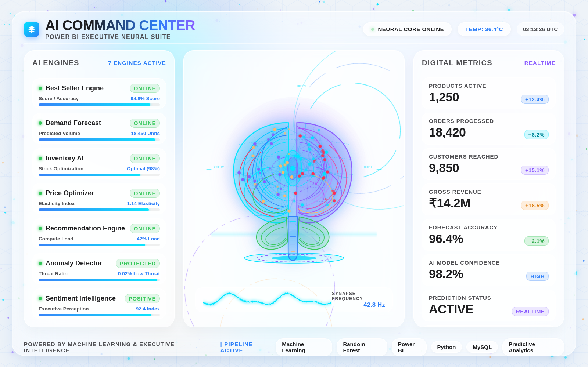
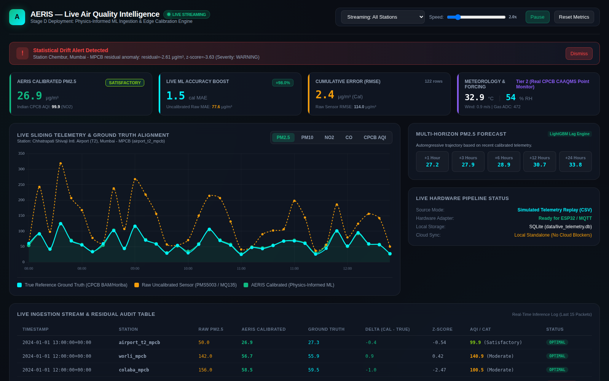
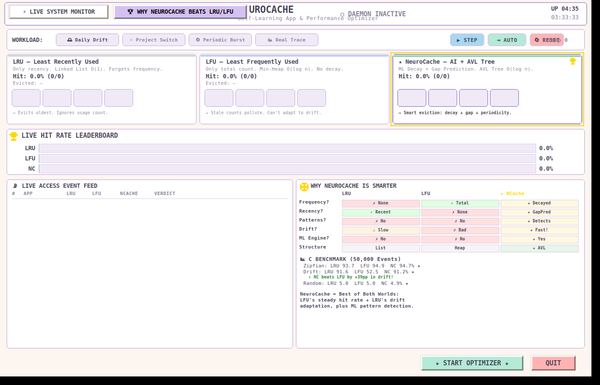

Field notes — Electronics & Computer Science, SAKEC · Second Year
I build things that read live data
and make a decision from it.
Four independent projects spanning a retail ML pipeline, a physics‑informed sensor‑calibration engine, a self‑learning cache written in C, and a concurrent trading simulator. Every number on this page comes from running the actual code — screenshots below are captured live, not mocked.
- Rows processed (largest pipeline)
- 500,372
- Real ground-truth sensor readings
- 126,997
- Core data structures implemented in C
- 12
- Concurrent threads coordinated (trading sim)
- 4 classes
About this notebook
I'm a second-year Electronics & Computer Science student at SAKEC. I like the seam between systems programming and machine learning — the point where a model's prediction has to survive contact with a real clock, a real cache, or a real sensor that drifts.
The four projects here were built independently, outside coursework, at different points over the past year. None of them are finished products — they're working prototypes with honest numbers attached. Where a project is a proof-of-concept rather than something production-hardened, I've said so directly.
Zenthos BI — AI Command Center
An end-to-end retail intelligence pipeline: synthetic e-commerce data generation, a MySQL warehouse, five trained ML models, and a live executive dashboard built on top.

ai_command_center.html rendered and screenshotted from the actual project code.What it does
Generates a realistic Amazon-style retail dataset (orders, customers, inventory, product catalog), loads it into MySQL, then trains a bank of models on top: a best-seller classifier, a demand forecaster, a price-elasticity recommender, an inventory optimizer, and an executive summarization layer that turns model output into plain-language recommendations. The dashboard is a from-scratch HTML/JS front end, not a Power BI export.
Real numbers, from the actual run
| Orders generated & loaded | 500,372 rows |
| Customer records | 50,001 rows |
| Product catalog (post-cleaning) | 1,357 SKUs |
| Best-seller classifier — held-out accuracy | 90.1% |
| Best-seller classifier — precision / recall | 90.5% / 77.0% |
| Train / test split | 1,084 / 272 samples |
The bold numbers on the dashboard itself (94.8% "score", 96.4%
"forecast accuracy") are the UI's live-telemetry display layer —
the metric I'd stand behind in an interview is the 90.1% test
accuracy from the actual saved pipeline_metrics.json
classification report, shown above.
How it's built
- Python data generation & cleaning scripts (
Python/) - MySQL warehouse with a dedicated import pipeline
- scikit-learn models: classifier + regressors for forecast/price/inventory (
AI/) - A desktop control GUI (Tkinter) for running the pipeline end-to-end
- Static HTML/CSS/JS executive dashboard, no external charting framework
AERIS — Physics-Informed Air Quality Calibration
Low-cost air quality sensors (the kind that cost ₹2,000 instead of ₹20,00,000) drift badly. AERIS trains a calibration model that corrects them against real government reference monitors, then streams the correction live.

What it does
Stage A pulls two years of regional reanalysis weather/pollution data (Open-Meteo CAMS + ERA5) and pairs it against real ground station readings from CPCB, MPCB, and IITM monitors across Mumbai. Stage B simulates a low-cost sensor's physical response and drift characteristics. Stage C trains a LightGBM calibration model that maps "what the cheap sensor reads" to "what the government monitor would read," plus a separate multi-horizon forecasting model. A FastAPI service replays the dataset in real time over a WebSocket so the dashboard shows raw vs. calibrated vs. ground-truth as a live stream, including drift-alert detection.
Real numbers, from the live run
| Regional reanalysis records (Tier 1, 2-yr hourly) | 175,440 rows |
| Real ground-station records (Tier 2, 8 stations) | 126,997 rows |
| Paired overlap timestamps for calibration | 50,372 hours |
| Raw sensor MAE vs. calibrated MAE (live demo run) | 111.8 → 1.4 µg/m³ |
| Cumulative error reduction from calibration | 98.7% |
This is a research/demo-grade project, not deployed hardware — the "sensor" stream is a physics-based simulation replaying the Stage B dataset, built specifically so it can swap to a real ESP32 + PMS5003/MQ135 sensor later without changing the ML or server code.
How it's built
- Two-tier data acquisition & merge pipeline (
a1–a3stages) - Sensor physics simulation with induced drift (Stage B)
- LightGBM calibration model + separate multi-horizon forecasting model
- FastAPI backend with an async WebSocket broadcaster
- SQLite for local persistence; designed for optional cloud sync
- Vanilla JS + Chart.js live dashboard, CPCB AQI computed in real time
NeuroCache — A Self-Learning Cache in C
Standard caches evict by fixed rules — least-recently-used, or least-frequently-used. NeuroCache replaces the rule with a small online model that predicts reuse probability per key, ranked live by an AVL tree.

What it does
NeuroCache is built to cover a full data-structures-and-algorithms syllabus honestly — twelve structures (stacks, queues, singly and doubly linked lists, an AVL tree, hash tables with both chaining and open addressing, graphs with BFS/DFS/topo-sort, and four sorting algorithms) all doing real work inside one caching engine, not built as separate toy demos. On top of that sits the actual idea: a logistic-regression-style online learner scores each cached key's reuse probability, and an AVL tree keeps eviction candidates ranked in O(log n) as those scores update. A companion Python daemon applies the same principle to real OS process priority and RAM trimming, cross-platform (Windows/Linux).
Real numbers, from the project's own benchmark
| Benchmark size | 50,000 access events |
| Hit rate — Zipfian workload (LRU / LFU / NeuroCache) | 93.7% / 94.9% / 94.7% |
| Hit rate — concept-drift workload | 91.6% / 52.5% / 91.2% |
| NeuroCache advantage over LFU under drift | +38.7 points |
NeuroCache doesn't beat a tuned LFU on a stable Zipfian workload — it's essentially tied. The real result is that it holds LRU-like adaptability when the workload's access pattern shifts, which is exactly where LFU falls apart.
How it's built
- Pure C core: 12 data structures, no external DSA libraries
- AVL tree keeps eviction order ranked as ML scores update live
- Python trace generators (Zipfian, drift, uniform) for reproducible benchmarks
- Cross-platform system daemon applying the same model to OS process scheduling
- Tkinter GUI for live visualization and side-by-side comparison
Real-Time Multithreaded Stock Trading Simulator
A Java Swing desktop app simulating a live market: independent price threads, an order-matching engine, and a persisted trade history — built to be honest about its concurrency, not just its UI.

What it does
Each of twelve simulated instruments (stocks and a few crypto tickers) runs its own scheduled price thread following a geometric Brownian motion random walk, ticking every 1.5 seconds independently of the UI thread. Orders go through a priority-queue-based limit order book that matches trades without blocking the interface, and every execution is persisted to a database asynchronously so the trade log never stalls the Swing event thread.
What I'd highlight in an interview
| Simulated instruments, independently threaded | 12 |
| Price update interval per instrument | 1.5s (GBM walk) |
| Named reentrant locks protecting shared state | 4 |
| Persistence layer | Embedded H2 (MySQL-compatible mode) |
The interesting part of this project isn't the GUI, it's the locking discipline underneath it — a dedicated lock per stock's price history, per trader's portfolio, and per order book, so concurrent order execution can't corrupt shared state or double-fill an order.
How it's built
- Java Swing GUI, strictly separated from the market simulation logic
ScheduledExecutorServiceper-stock price threadsPriorityQueue-based order book for limit-order matchingReentrantLocks guarding stock, trader, and order-book state- Embedded H2 database (MySQL-compatible mode) for trade persistence
- Custom checked exceptions for invalid orders / insufficient funds
Toolset, by way of these four projects
Languages
Python, Java, C, SQL
Machine learning
scikit-learn, LightGBM, feature engineering, online/SGD learning, model evaluation
Data & backend
Pandas, MySQL, SQLite, FastAPI, WebSockets, ETL pipeline design
Systems
Core data structures in C, multithreading & locking in Java, cross-platform process control
Interfaces
Tkinter, Java Swing, vanilla HTML/CSS/JS dashboards, Chart.js
Currently learning
Deeper time-series forecasting, model deployment/serving, and cleaner MLOps practice around these projects
Get in touch
Open to internship and project opportunities in AI/ML and applied systems work.